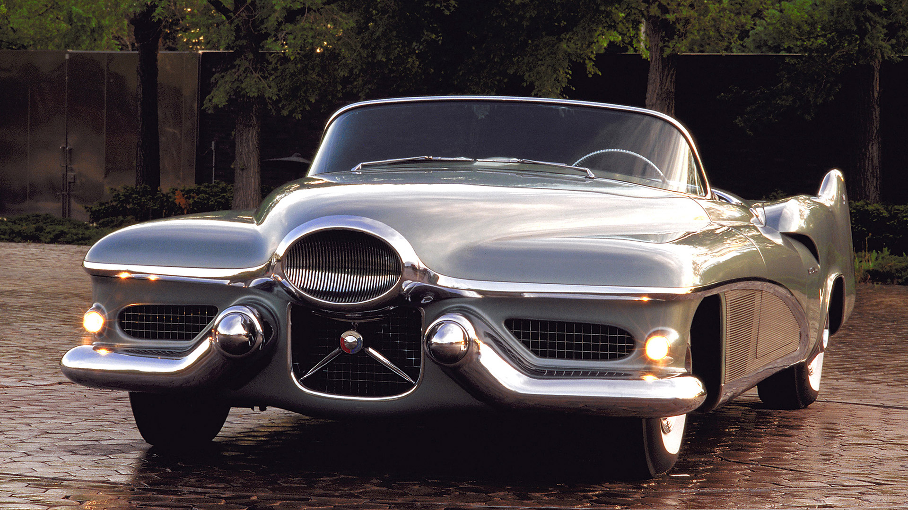
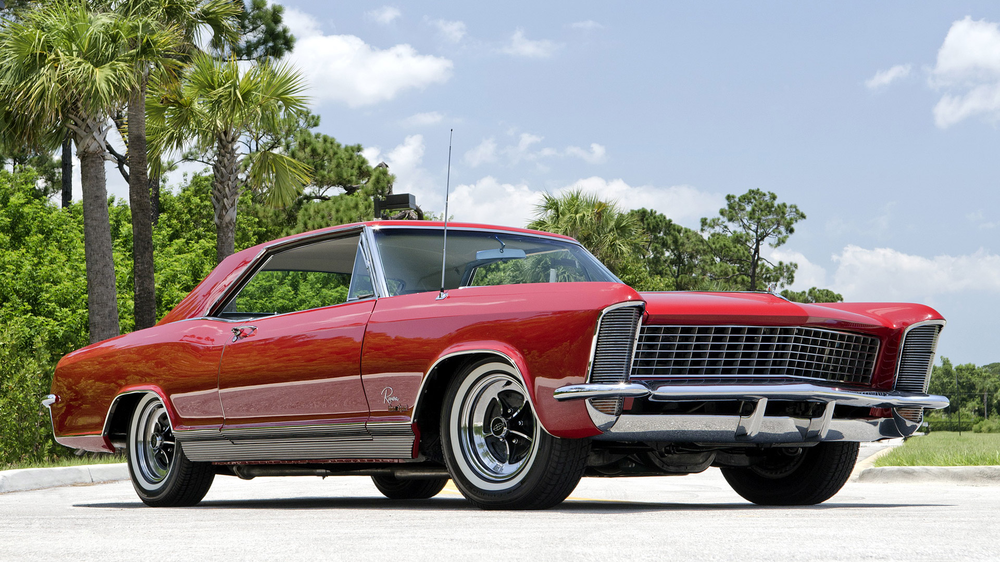
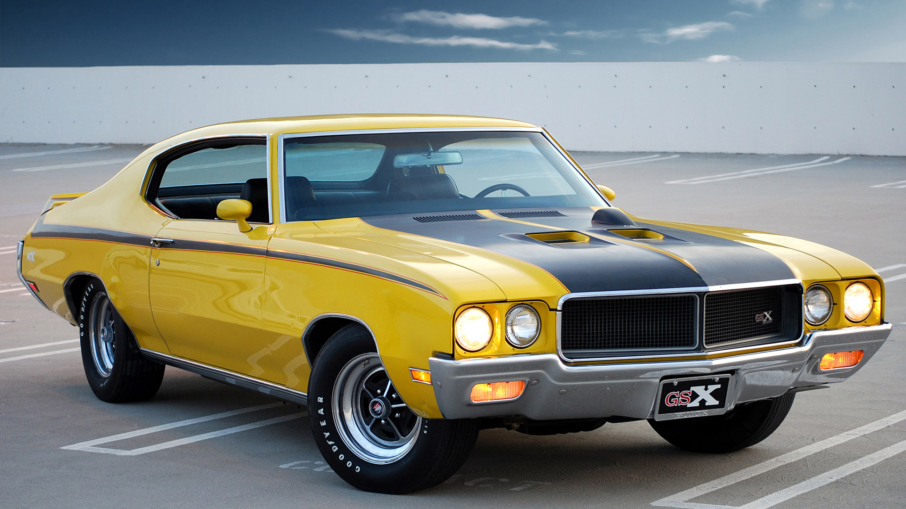
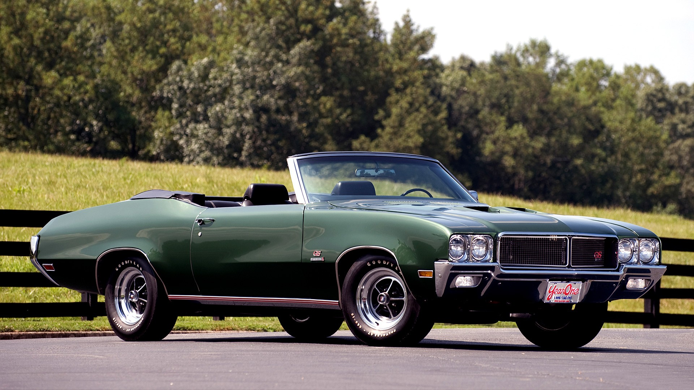

Buick
Bakgrunn
Buick byrja sjølvstendig produksjon av bilar i 1903, men det tok ikkje lang tid før General Motors kjøpte selskapet. General Motors haldt tilbake lanseringen av Buick internasjonalt, men blei etter kvart blei Buick seld i Kina, New Zealand, Israel, Taiwan og Midtausten. Buick selde så bra i Kina, at allereide før andre verdskrig var ein av fem bilar i Kina Buick.
LOGO
Viktige periodar
1951

Le Sabre heiter denne konseptmodellen. Den blei aldri serieprodusert, men var eit utgangspunkt for andre modellar. Denne konseptmodellen blir sett på som den mest viktigaste på heile 1950-talet.
1965

Buick Riviera var ein luksusbil av høg klasse. Den var byrjinga på kva Buick står for i dag, nemmeleg luksus. Dei produserte Rivieraen frå 1963 og heilt til 1999.
1970

Buick var nesten på topp når det gjald luksus og komfort. Dei einaste som var betre enn Buick, var Cadillac. Cadillac produserte ikkje sportslege bilar, derfor byrja Buick å produsera ein modell dei kalla GSX.
1972

Grand Sport modellen til Buick var ein nær slektning av GSXen. Den var sportsleg, men hadde også ein god mengde komfort. Den største motoren var på heile 7,5 liter og hadde 360 hestekrefter.